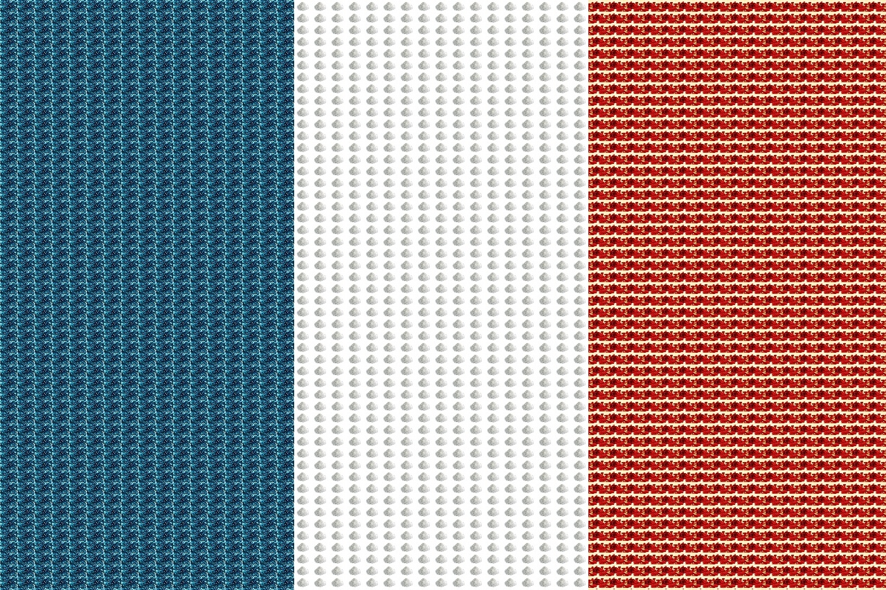
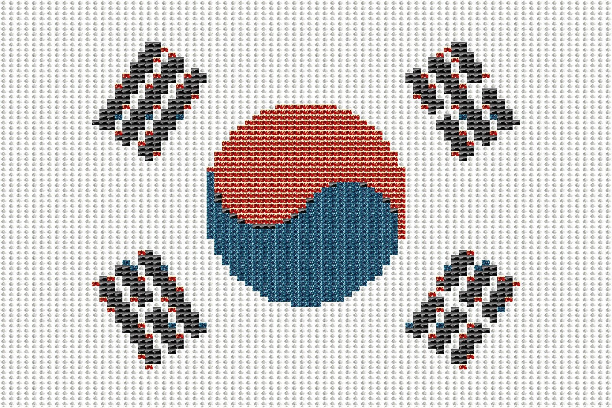
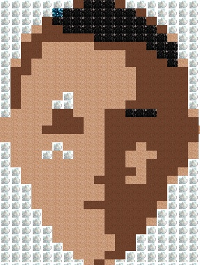

Original Image


Project Description:
This project remakes a given image into a mosaic image. Each "tile" is another image that the user saved in the source folder.Original Image
Here is the general breakdown of what the code does:
1. Resize all the source images into 15 x 12 images
2. Place those "tiles" in the "/mosaics" folder
3. Calculate average color of each tile image
4. Compare each tile average color with pixels in original image
5. If the color difference is smaller than the given difference, replace it with whatever there is currently.
Here are the random images that we will use for our tiles:
Source Images


Here they are once they get resized and placed in the /mosaics folder:
Tile Images
The resulting output images:
You can see that each color on the original image is replaced by the tile image with the closest matching color scheme.
Final Images
  P.S. You can find my source code here: myproject3.py
CREDIT
Images were found at:
https://upload.wikimedia.org/wikipedia/commons/thumb/0/09/Flag_of_South_Korea.svg/2000px-Flag_of_South_Korea.svg.png
http://specials-images.forbesimg.com/imageserve/573c6b334bbe6f63618536ea/0x0.jpg?fit=scale&background=000000
https://wallpaperscraft.com/image/roses_petals_flower_red_90476_3840x2160.jpg
https://static.pexels.com/photos/1346/blue-abstract-balls-spheres.jpg
http://eskipaper.com/images/black-backgrounds-11.jpg
http://www.parloursupply.com/media/catalog/product/cache/14/image/9df78eab33525d08d6e5fb8d27136e95/p/r/productshot_960x500_pulver.png
http://pngimg.com/upload/face_PNG5660.png
http://orig13.deviantart.net/037d/f/2012/042/f/4/seamless_human_skin_by_hhh316-d4pfpwv.jpg
http://kingofwallpapers.com/brown/brown-024.jpg
{kind=link}
{kind=link}
{kind=link}
{kind=link}
{kind=link}
{kind=link}
{kind=link}
{kind=link}
{kind=link}